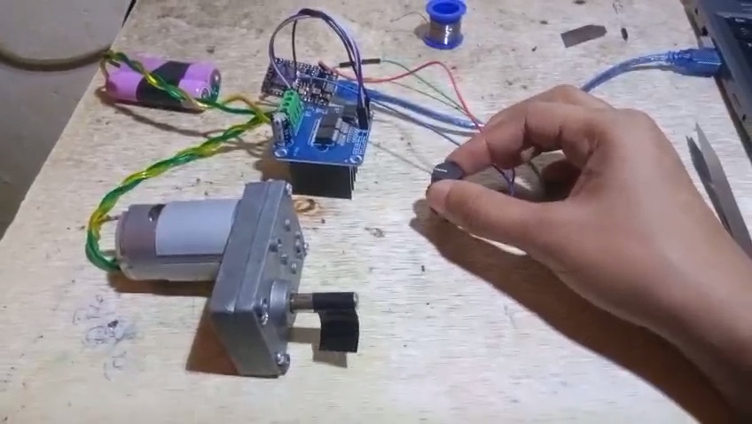

Robosoccer Bot
Introduction
This is a Robosoccer bot I made with my college team for robosoccer compedition.
its body is made from aluminium to meet weight limits(5 Kg), its has a curved metal plate to catch ball and guide it to goal, we specifically used only 2 Wheels for on spot turning and better control.
Technical Details & Approach
Architecture:
- 1. Lightweight Aluminium Chassis: considering the lightweight and agility requirements of a robosoccer bot, we used lightweight aluminium for its frame giving the bot more than enough structural strength and agility for the compedition while keeping strictly within the 5 Kg weight limit.
- 2. 2-Wheel Differential Drive: We designed this bot as 2 wheel drive instead of 4 wheel drive, 2 wheels allows the bot to turn on spot hence improving maneuverability.
- 3. High-Torque Gear Motors: high torque gear motor with sufficient RPM rate balancing speed and power.
- 4. Curved Ball Catcher: Front curved metal scoop designed to trap and guide the ball under aggressive pitch maneuvers.
Components: 2x 300 RPM Jhonson Gear Motor, 3 mm Aluminium L profiles for lightweight durable chasis, ESP32 Devkit V1, BTS7960 H-Bridge Motor Drivers, 3S LiPo battery, FlySky Remote Controller, etc.
Note: Demo video will be uploaded on YouTube and linked here soon.